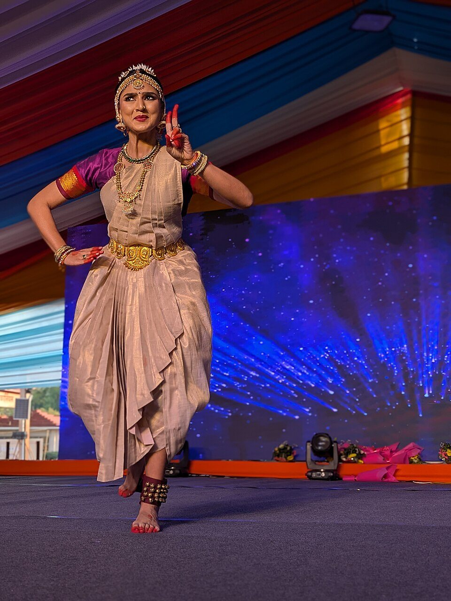
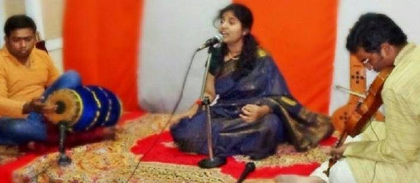
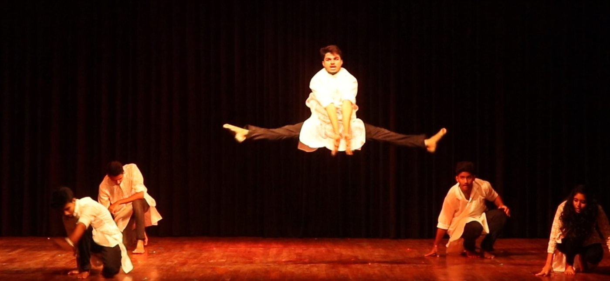
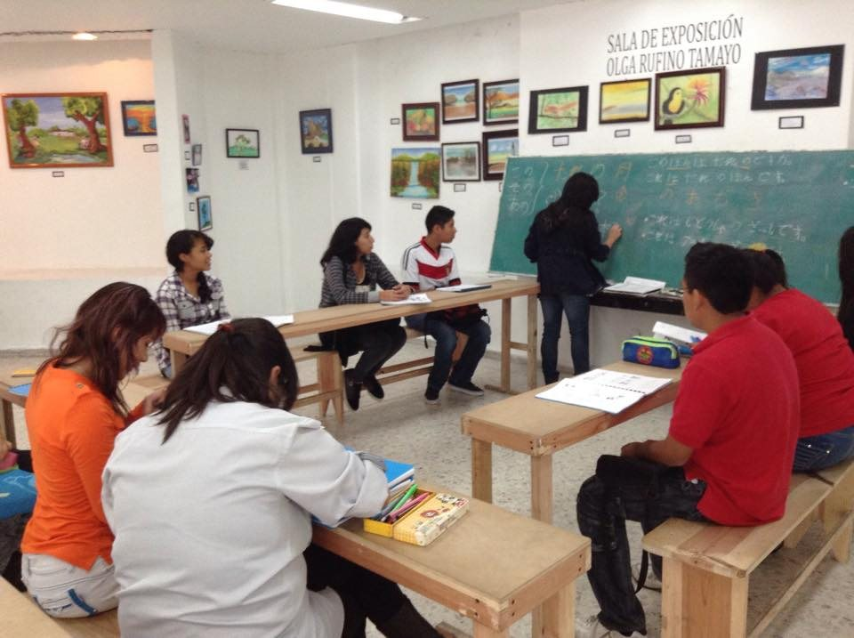
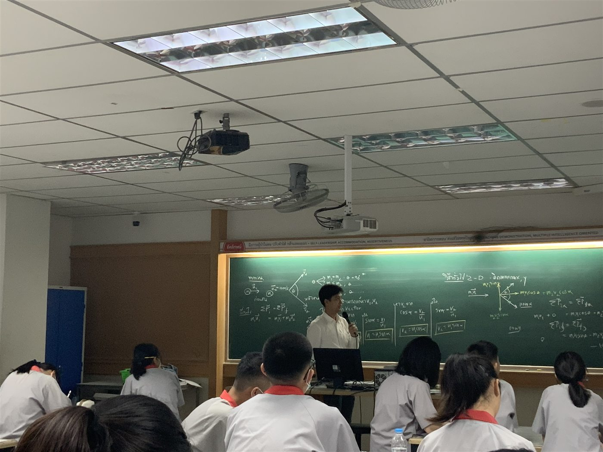

தமிழ்
LANGUAGE PATHWAY
Learn Tamil online
45-session spoken Tamil course · Stories, Aathichudi, Thirukkural and literature
7 structured levels · 350 sessionsLive online sessions
Learning stages: Arumbu · Mottu · Mugai · Malar · Alar · Vee · Semmal
Discover interactive, teacher-led online classes that build confident communication, lifelong skills and a meaningful connection with language and culture.

Speaking-first options and progressive literacy pathways, enriched with culture, storytelling and practical conversation.
45-session spoken Tamil course · Stories, Aathichudi, Thirukkural and literature
Learning stages: Arumbu · Mottu · Mugai · Malar · Alar · Vee · Semmal
40-session spoken Malayalam course · Listening, pronunciation, conversation and literacy
Learning stages: Koombu · Viriyal · Pushpam · Poornapushpam
40-session spoken Hindi course · Devanagari, vocabulary, role plays and expression
Learning stages: Aadhaar · Kali · Pushp · Poorna Pushpa
Learning is designed to help students practice, participate and grow at a comfortable pace.
Build everyday communication through real-life conversations and listening practice.
Follow structured pathways from sounds and letters to fluency and deeper understanding.
Enjoy storytelling, role play, songs, games and interactive practice.
Connect to language and culture through online classes from wherever you live.
WisdaSchool is expanding its online classes with creative arts, Japanese, Mathematics and Science. Share your interest and location to hear about programme schedules and enrolment.
Explore the movement, rhythm and expressive storytelling of this classical Indian dance form through guided online learning.
Photo: WarmaFiesta · CC BY-SA 4.0
Build a foundation in Carnatic vocal music, with guided practice in melody, rhythm and song.
Photo: ImTHOP · CC BY-SA 4.0
Learn lively choreography, musicality and confident movement in an engaging online class.
Photo: Mainakchatterjee.tech · CC BY-SA 4.0
Develop Japanese language foundations and explore culture through interactive online lessons.
Photo: Rexdanato · CC BY-SA 4.0
Online Mathematics and Science classes for school students living abroad, with programme details tailored to the learner's grade and location.
Photo: Siriyakorn poompradab · CC BY 4.0Refund and rescheduling documents are currently drafts for review, not final approved policies.
Tell us the learner's age, programme and location. We'll share the latest information about online classes.